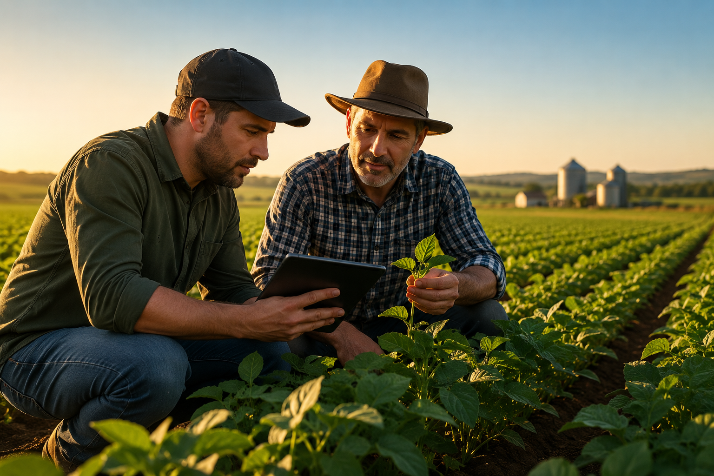
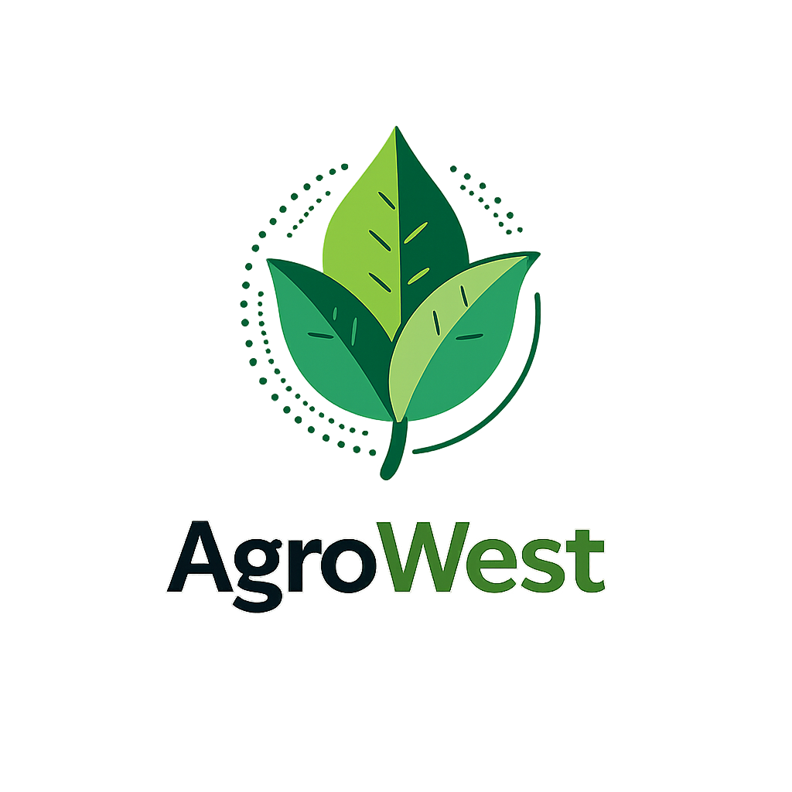
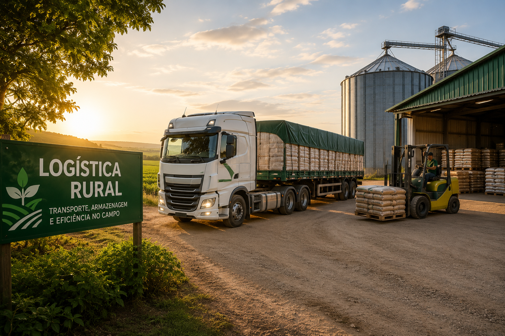
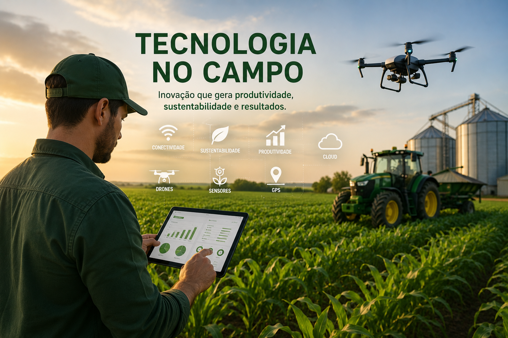

Consultoria Agrícola
Planejamento estratégico e suporte técnico para melhorar a produtividade no campo.


A Agrowestfal atua oferecendo soluções modernas para produtores rurais e empresas do agronegócio. Nosso objetivo é aumentar a eficiência no campo através de estratégias inovadoras, planejamento e tecnologia.
Trabalhamos com foco em qualidade, sustentabilidade e resultados, ajudando nossos clientes a crescer com segurança e confiança.
Planejamento estratégico e suporte técnico para melhorar a produtividade no campo.

Soluções eficientes para transporte e distribuição de produtos agrícolas.

Integração de ferramentas modernas para monitoramento, gestão e automação agrícola.

Anos de atuação no setor agropecuário.
Soluções modernas para otimizar resultados.
Compromisso com o desenvolvimento responsável.
Suporte próximo e personalizado para cada cliente.
“Excelente atendimento e ótimos resultados no campo.”
“A equipe trouxe soluções modernas para nossa produção.”
“Serviço de qualidade e suporte muito eficiente.”
Entre em contato com a Agrowestfal e descubra como podemos ajudar o seu negócio a crescer.
Solicitar Atendimento